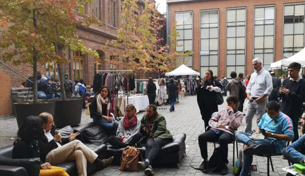

Me encuentro trabajando en la Fundación de Tremendas, manejando sus redes sociales y creando contenido. Estos meses de trabajo me han dado grandes aprendizajes para mi carrera como comunicadora.
Aquí pueden ver más de lo que se hace en la fundaciónTambién me encuentro creando contenido en rrss para el hotel de perros Espacio Mascotas, dónde debo responder mensajes y subir fotos de los perritos y de su tiempo en el hotel, me gusta mucho este trabajo porque me encantan los perros y por que se que es un buen hotel que los trata con respeto y cariño.
-Desde primer semestre de la universidad participe en diversos programas de Radio UC, en distitos cargos ya sea conductora, columnista o reportera. Pudiendo adquirir múltiples conociemientos acerca de el trabajo radial.
- En segundo año tuve la oportunidad de ser tutora de los alumnos novatos de la facultad dónde también pude compartir mis conocimeintos y consejos acerca de la carrera, ya sea desde cómo estudiar a como enfrentar problemas comunes, como estres o ansiedad en tiempo de éxamenes. Generalmente realizabamos las reuniones en el patio de comunicaciones. -También en tercer año empece a ser ayudante del test de actualidad IA y IIB, tanto tomando las pruebas como revisando.
